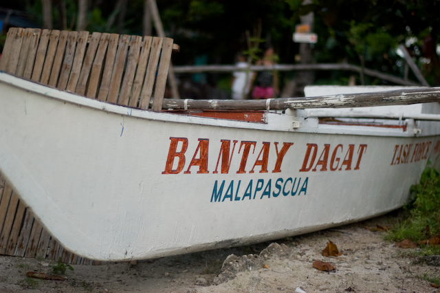
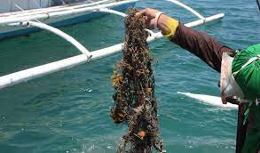
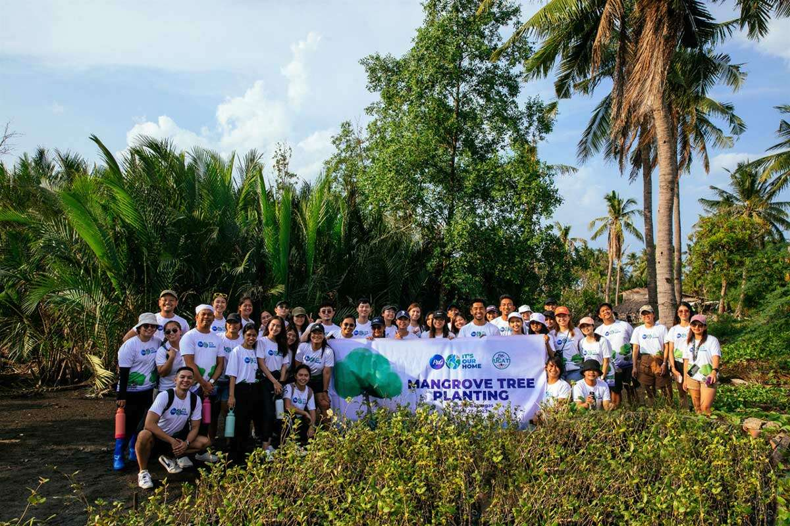

Preserve the Waters
Achievements

Partnered with PAFCPPIC, the Philippine Army Finance Center Producers Integrated Cooperative, in providing livelihood aid to Bantay Dagat members and marginalised fisherfolk, and in securing research equipment for the organisation.

Removed Ghost Nets in bgy. Lutoban, and created a reporting network where local fishermen can report lost fishing gear (nets and traps) that can be retrieved by MCP dive teams.

Joined the Mangrove Planting Coalition, and helped plant 30.000 mangrove trees in Banilad, Dumaguete together with 350 other volunteers.